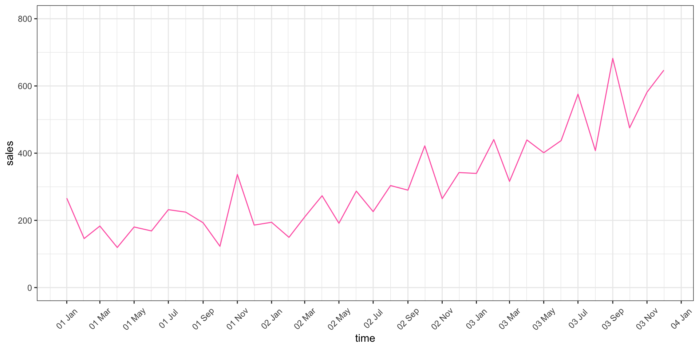
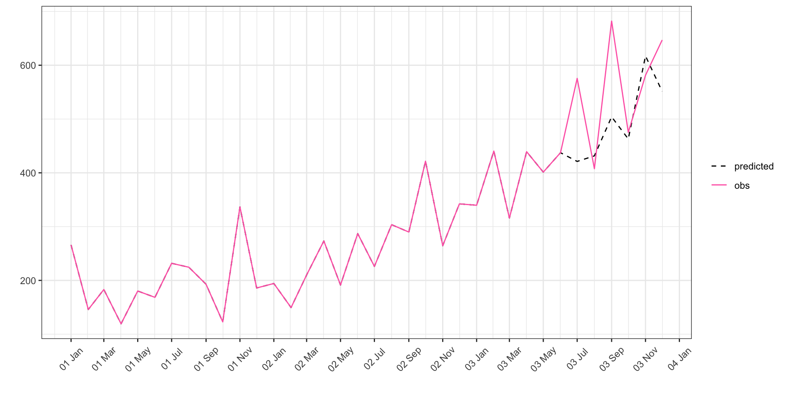
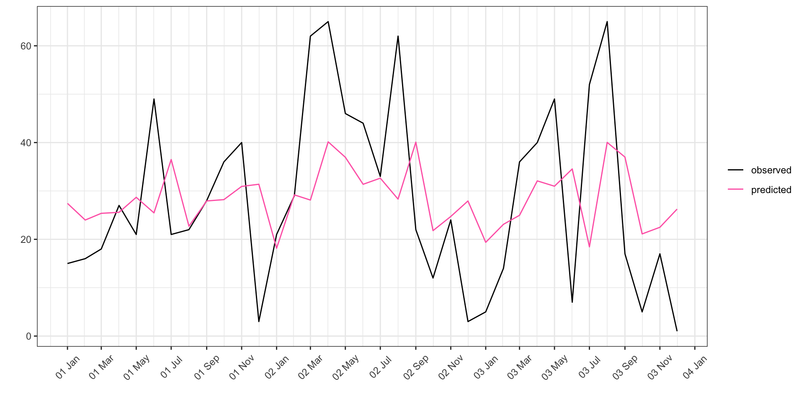
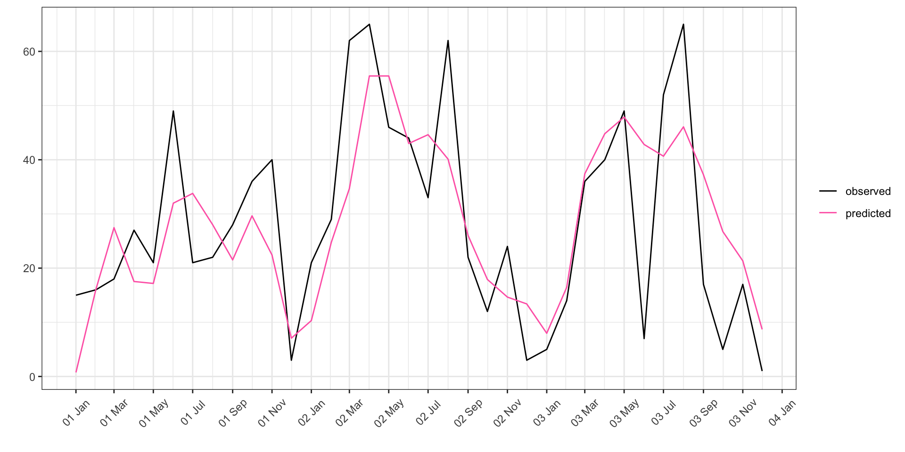
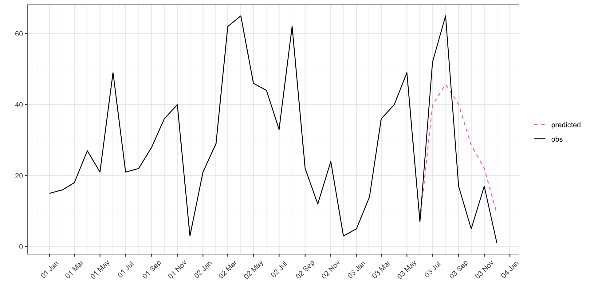

In this article, I focus on time series analysis and their forecast with R. I will use two times series:
Both were downloaded from datamarket website.
First we need to load the packages that will be used throughout the analysis. These are the usual tidyverse, for data manipulation and data visualisation, lubridate and stringr packages, for dealing with dates and strings, and the package forecast specific for time series analysis:
require(tidyverse)
require(lubridate)
require(stringr)
require(forecast)Let us first focus on shampoo sales. This dataset contains data on the sales of shampoo over a three year period. I downloaded the data and saved it on github so that it can be accesed straight from github and parsed to R as follows:
urlfile <- "https://raw.githubusercontent.com/emanuelaf/emanuelaf.github.io/master/data/sales-of-shampoo.csv"
shampoo_sales <- read_csv(urlfile)The dataset we imported contains two variables and 36 observations:
| Month | Sales of shampoo over a three year period |
|---|---|
| 1-01 | 266.0 |
| 1-02 | 145.9 |
| 1-03 | 183.1 |
| 1-04 | 119.3 |
| 1-05 | 180.3 |
| 1-06 | 168.5 |
When it comes to time series, the main data manipulation issue is usually related to the date and time format. Here the variable that indicates time is called Month and it is composed by a first part, before the -, that seems to indicate the year (year 1, year 2, year 3) and a second part, after the -, that indicates the month (month 1, month 2, etc). Did the software understand this format or did it not? We ask R for the format of the Month variable:
class(shampoo_sales$Month)## [1] "character"And the answer is that R did not quite get what we are talking about. R believes it is a character.
In order to make sure that the software will treat Month the way it should, let us do some small manipulations using the package lubridate. From my knowledge there is no year-month format in R, so once we tell R that we are dealing with dates, it will automatically add the day:
shampoo_sales <- shampoo_sales %>%
rename(time = Month, sales = `Sales of shampoo over a three year period`) %>%
mutate(time = paste0("0", time)) %>%
mutate(time = as.Date(parse_date_time(time, "%y%m"))) %>%
na.omit()
knitr::kable(head(shampoo_sales), "html") %>%
kableExtra::kable_styling(full_width = F, font_size = 11, position = "center")| time | sales |
|---|---|
| 2001-01-01 | 266.0 |
| 2001-02-01 | 145.9 |
| 2001-03-01 | 183.1 |
| 2001-04-01 | 119.3 |
| 2001-05-01 | 180.3 |
| 2001-06-01 | 168.5 |
Now the data seems ready for some visualisation and modelling.
First let us just plot the time series, showing the time on the x axis and the amount of sales on the y axis:
ggplot(shampoo_sales, aes(x = time, y = sales)) +
geom_line(col = "hotpink") + ylim(0, 800) +
scale_x_date(date_labels = "%y %b", date_breaks = "2 month") +
theme_bw() + theme(legend.title = element_blank(),
axis.text.x = element_text(angle=45, vjust=0.5))
Observing the above plot we can see that there seems to be fluctuations but there is an increasing linear trend. Also, it seems that knowing what happened at time \(t\) may be informative on what will happen at time \(t+h\). But how far does the dependence go? Shampoo sales in May, depend only on those of April, or do they depend on the sales over the whole season? Or do they just depend on the sales of May in the previous year?
In order to answer such questions, we need to build a model that is able to deal with such dependencies.
Standard statistical models assume indipendence of observations. In time series this assumption does not hold. What we want to model in time series is such dependence as the history untill time \(t\) is the only thing we have to predict what will happen at time \(t+k\). We call such dependence autocorrelation meaning that each observation is related to itself at the previous time. If there is autocorrelation, we need to include the dependent variable suitably lagged as predictive variables in the model.
The models used to model time series are ARIMA models. ARIMA models are the most general class of models for forecasting time series. They have three components:
In general then, an ARIMA model can be considered as a special type of regression model in which the dependent variable has been stationarized (if necessary through the I-component) and the independent variables are all lags of the dependent variable (the AR-component) and/or lags of the errors (the MA-component).
In general a model with AR(p) and MA(q) looks like this:
\[ Y_t = (\alpha_1 \cdot Y_{t-1} + ... \alpha_p \cdot Y_{t-p} ) + \epsilon_t + (\theta_1 \epsilon_{t-1} + ... \theta_q \epsilon_{t-q}) \]
While if we add the integration component of order \(h\) for reaching stationarity, we model \(Y_t - Y_{t-1} ... - Y_{t-h}\).
In addition to such components, there may be drifts that interpret a linar trend and/or exogenous variables that may help the prediction.
Now, back to our example, let us look at the autocorrleation plots:
par(mfrow = c(1,2))
acf(as.ts(shampoo_sales$sales), main = "Sales")
pacf(as.ts(shampoo_sales$sales), main = "Sales")The first plot shows the autocorrelations. Each observation seems to be fairly correlated with the previous 4-5 observations. The partial autocorrelation at lag \(k\) (represented in the second plot) is the autocorrelation between \(Y_t\) and \(Y_{t−k}\) not accounting for the other lags. Notice that by looking at this plot, it seems that the autocorrelation is only with the observation at time \(t-1\) and maybe \(t-2\).
From the time series plot in figure 1, we also expect to find a drift, i.e. some sort of linear trend component. Moreover, looking at figure 1, the time series did not seem stationary, i.e. the mean did not seem to be constant throughout time.
Hence, we expect the software will suggest to use an ARIMA model with an autoregressive component of order 1 or 2, no moving average component, a stationarity adjustment and a drift.
The forecast package in R contains a very useful function called auto.arima which helps us select the best ARIMA model. More specifically, it searches over all possible models within the order constraints provided and it returns the best ARIMA model according to AIC or BIC value. In our case, we will not set any contrainsts hence using the default:
arima1 <- auto.arima(as.ts(shampoo_sales$sales))
arima1## Series: as.ts(shampoo_sales$sales)
## ARIMA(2,1,0) with drift
##
## Coefficients:
## ar1 ar2 drift
## -1.0223 -0.3655 11.6504
## s.e. 0.1674 0.1670 4.9068
##
## sigma^2 estimated as 5033: log likelihood=-197.81
## AIC=403.63 AICc=404.96 BIC=409.85The model R found is the one we expected from the graphical analysis: there is an autorogressive component of order 2, no moving average component and a drift.
When we do prediction and forecasting we do not have information on the whole time series: we have observed up to time \(t\) and we want to forecast ahead of \(t+k\).
Suppose that we will use the model to predict one month at the time. In order to evaluate the performance of the model we split the dataset into a training set (with for example the first 30 observations), we fit the model (that will probably look like the one above) and then predict the 31st observation. Then we run the model on the first 31 observations, predict the 32nd and so on. If this works, then we may be quite sure that if we predict the 37th observation, we will not make a much larger error.
So first we split the dataset, allowing for a varying index:
train_index <- 30
n_total <- nrow(shampoo_sales)
shampoo_sales_train1 <- shampoo_sales[1:(train_index),]
shampoo_sales_test <- shampoo_sales[(train_index+1):n_total,]
predicted <- numeric(n_total-train_index)Then we apply a for cycle that iterates model and estimates one month ahead:
for (i in 1:(n_total-train_index)) {
shampoo_sales_train <- shampoo_sales[1:(train_index-1+i),]
arima_model <- auto.arima(as.ts(shampoo_sales_train$sales))
pred <- forecast(arima_model, 1)
predicted[i] <- pred$mean
}We saved all the results in a vector that needs to be combined with the initial dataset containing all the real values. We hence build a dataset that contains the time, the observed data and the predicted data:
df_pred <- tibble(obs = c(shampoo_sales_train1$sales, shampoo_sales_test$sales),
predicted = c(shampoo_sales_train1$sales, predicted),
time = shampoo_sales$time) And then we plot the predictions and the observed values. :
ggplot(gather(df_pred, obs_pred, value, -time) %>%
mutate(obs_pred = factor(obs_pred, levels = c("predicted", "obs"))),
aes(x = time, y = value, col = obs_pred, linetype = obs_pred)) +
geom_line() +
xlab("") + ylab("") +
scale_color_manual(values=c("black", "hotpink")) +
scale_linetype_manual(values=c(2, 1)) +
scale_x_date(date_labels = "%y %b", date_breaks = "2 month") +
theme_bw() + theme(legend.title = element_blank(),
axis.text.x = element_text(angle=45, vjust=0.5))
The predicted values do follow the general increasing trend but there is still discrepancies. However as we have no additional information other than the time series itself, this is may be the best we can do.
In this second part of the article we work on a dataset containing 36 consecutive monthly sales and advertising expenditures of a dietary weight control product. The data was downloaded from datamarket website and it is now available straight from github and can be parsed to R as follows:
urlfile <- "https://raw.githubusercontent.com/emanuelaf/emanuelaf.github.io/master/data/advertising-and-sales-data-36-co.csv"
ads_sales <- read_csv(urlfile)Differently from before, we have exogenous information: we have data on advertising expenditures.
The imported dataset looks like this:
| Month | Advertising | Sales |
|---|---|---|
| 1-01 | 12.0 | 15 |
| 1-02 | 20.5 | 16 |
| 1-03 | 21.0 | 18 |
| 1-04 | 15.5 | 27 |
| 1-05 | 15.3 | 21 |
| 1-06 | 23.5 | 49 |
Hence we have three variables containing information about the time stamp, the advertising expenditure and the sales which will be the dependent variable.
As mentioned earlier, the first thing to do is to make sure that the date format is correct:
class(ads_sales$Month)## [1] "character"As in the above example, R believes that the date variable is a character. Again, we need to use lubridate for fixing it:
ads_sales <- ads_sales %>%
rename(time = Month) %>%
mutate(time = paste0("0", time)) %>%
mutate(time = as.Date(parse_date_time(time, "%y%m"))) %>%
na.omit()
knitr::kable(head(shampoo_sales), "html") %>%
kableExtra::kable_styling(full_width = F, font_size = 11, position = "center")| time | sales |
|---|---|
| 2001-01-01 | 266.0 |
| 2001-02-01 | 145.9 |
| 2001-03-01 | 183.1 |
| 2001-04-01 | 119.3 |
| 2001-05-01 | 180.3 |
| 2001-06-01 | 168.5 |
Now the data seems ready for some visualisation and modelling.
Let us start by plotting the time series, showing the time on the x axis and the amount of sales on the y axis:
p1 <- ggplot(gather(ads_sales, type, value, -time) %>%
mutate(type = factor(type, levels = c("Sales", "Advertising"))),
aes(x = time, y = value, col = type)) +
geom_line() +
xlab("") + ylab("") +
scale_color_manual(values=c("hotpink", "orange")) +
scale_x_date(date_labels = "%y %b", date_breaks = "2 month") +
theme_bw() + theme(legend.title = element_blank(),
axis.text.x = element_text(angle=45, vjust=0.5))
p1 Let us look at the plot focusing on sales. There seems to be systematic ups and downs during specific times of the year: winter and autumn are characterised by very little sales, with a down peak occuring always in december, while spring and summer are good times for sales.
It also seems that advertisments peaks conicide with sales peaks, suggesting that advertisements may be related to sales increase. However, as we are looking at a dietary product this would mainly be advertised in spring and summer, when people are more worried about their body shape. Even if you wouldn’t advertise it, people may go and buy it during those months as they want to get ready for summer! This needs to be investigated by building a statistical model.
Moreover I expect this time series to be stationary as, at first (human!) sight the average and variance seem constant throughout time.
In order to find out what is responsable for what (seasonality or ads?), we need to build a model. As explained earlier, when we work with time series, we use ARIMA models.
Before we apply auto.arima function, that searches the best ARIMA model, let us look at the autocorrleation plots:
par(mfrow = c(1,2))
acf(as.ts(ads_sales$Sales), main = "Sales")
pacf(as.ts(ads_sales$Sales), main = "Sales")It looks like the dependent variable only slightly depends on the previous observation, but I this dependence does not seem significant. The autocorrolation plot shows a fast decreasing in autocorrelation, suggesting the presence of a moving average component.
Moreover, there seems to be a slight seasonality: in fact the autocorrelation plots exhibit negative autocorrelation with observations around lag 6 and positive autocorrelation with observations at around lag 12. This suggests that, for example, that the behaviour of sales in june is opposite to that of sales in december-january but is similar to that of sales around june of the year before. Such seasonality is however very slight so I don’t think auto.arima function will find it statistically significant.
As we did earlier in this article, we use the auto.arima function contained in the forecast package to find the best model:
arima1 <- auto.arima(as.ts(ads_sales$Sales))
arima1## Series: as.ts(ads_sales$Sales)
## ARIMA(0,0,1) with non-zero mean
##
## Coefficients:
## ma1 mean
## 0.3532 28.1789
## s.e. 0.1584 3.8999
##
## sigma^2 estimated as 320.7: log likelihood=-153.99
## AIC=313.98 AICc=314.73 BIC=318.73The chosen model, which was selected based on AIC or BIC index, does not contain the AR component (as mentioned earlier, the plot showed only a very slight dependence) and it does not contain the I-component (meaning that the series is stationary, as expected from the time series plot). It onlt contains a moving average component added.
In order to qualitatively assess the goodness of the above model, let us compare the predicted values with the observed ones:
df <- tibble(observed = ads_sales$Sales, predicted = as.numeric(arima1$fitted), time = ads_sales$time) %>%
mutate(abs_error = abs((observed - predicted)/observed*100))
ggplot(gather(df %>% select(-abs_error), obs_pred, value, -time),
aes(x = time, y = value, col = obs_pred)) +
geom_line() +
xlab("") + ylab("") +
scale_color_manual(values=c("black", "hotpink")) +
scale_x_date(date_labels = "%y %b", date_breaks = "2 month") +
theme_bw() + theme(legend.title = element_blank(),
axis.text.x = element_text(angle=45, vjust=0.5))
It seems that the model cannot reach either the high peaks nor the low ones. This is fairly common when the arima model only uses information coming from the time series itself. However in this case we do have exogenous info, that is the investments in advertisment. Moreover, there are recurrent peaks in spring/summer time and down peaks in autumn/september, although they do not represent a proper seasonality. Hence we may add dummy variable for autumn/winter that forces the model to predict different values when the dummy is positive.
First let us add a variable that indicates autumn and winter:
ads_sales <- ads_sales %>%
mutate(winter = as.factor(ifelse(month(time) >= 9 | month(time) <= 2, 1, 0)))And now let us add this variable, together with the advertisment expenditure, in the arima model. This can easily be done using the parameter xreg of the auto.arima function:
arima2 <- auto.arima(as.ts(ads_sales$Sales),
xreg = cbind(ads_sales$Advertising, ads_sales$winter))Predicted values according to the new model are then plotted with the usual procedure:
df <- tibble(observed = ads_sales$Sales, predicted = as.numeric(arima2$fitted), time = ads_sales$time) %>%
mutate(abs_error = abs((observed - predicted)/observed*100))
ggplot(gather(df %>% select(-abs_error), obs_pred, value, -time),
aes(x = time, y = value, col = obs_pred)) +
geom_line() +
xlab("") + ylab("") +
scale_color_manual(values=c("black", "hotpink")) +
scale_x_date(date_labels = "%y %b", date_breaks = "2 month") +
theme_bw() + theme(legend.title = element_blank(),
axis.text.x = element_text(angle=45, vjust=0.5))
It does seem that things go much better! However the fitted model is no more an ARIMA:
arima2## Series: as.ts(ads_sales$Sales)
## Regression with ARIMA(0,0,0) errors
##
## Coefficients:
## xreg1 xreg2
## 1.8062 -10.4637
## s.e. 0.1850 2.9260
##
## sigma^2 estimated as 176.1: log likelihood=-143.13
## AIC=292.26 AICc=293.01 BIC=297.01In fact there is no autoregressive component and no moving average component. What happened then? ARIMA models are useful when we work with observations that are correlated, i.e. when \(y_t\) is correlated with \(y_{t-k}\). If we include a regressor \(X\), we are wondering whether \(y_t | x_{t}\) is correlated with \(y_{t-k} | x_{t-k}\) (with \(k > 0\)). Saying that there is no autoregressive componenent means that given \(X\), \(y_t\) does no more depend on \(y_{t-k}\). In our case this means that if we condition on advertisments, sales in month \(t\) are independent of sales in the previous months.
As explained in example 1), let us first split the dataset, allowing for a varying index and then we apply a for cycle that iterates model and estimates:
train_index <- 30
n_total <- nrow(ads_sales)
ads_sales_train1 <- ads_sales[1:(train_index),]
ads_sales_test <- ads_sales[(train_index+1):n_total,]
predicted <- numeric(n_total-train_index)
for (i in 1:(n_total-train_index)) {
ads_sales_train <- ads_sales[1:(train_index-1+i),]
arima_model <- auto.arima(as.ts(ads_sales_train$Sales),
xreg = cbind(ads_sales_train$winter, ads_sales_train$Advertising))
pred <- forecast(arima_model, 1, xreg = cbind(ads_sales_test$winter[i],
ads_sales_test$Advertising[i]))
predicted[i] <- pred$mean
}Now let us plot the predictions:
df_pred <- tibble(obs = c(ads_sales_train1$Sales, ads_sales_test$Sales),
predicted = c(ads_sales_train1$Sales, predicted),
time = ads_sales$time)
ggplot(gather(df_pred, obs_pred, value, -time) %>%
mutate(obs_pred = factor(obs_pred, levels = c("predicted", "obs"))),
aes(x = time, y = value, col = obs_pred, linetype = obs_pred)) +
geom_line() +
xlab("") + ylab("") +
scale_color_manual(values=c("hotpink", "black")) +
scale_linetype_manual(values=c(2, 1)) +
scale_x_date(date_labels = "%y %b", date_breaks = "2 month") +
theme_bw() + theme_bw() + theme(legend.title = element_blank(),
axis.text.x = element_text(angle=45, vjust=0.5))
In this article, we have seen how to deal with time series and how to use an ARIMA model for forecasting. The general idea is that time series models use information coming from the time series itself, i.e. coming from the so far observed values. However such models may not be able to see and to model high and low peaks. Hence, we can use either exogenous variables or add dummies to somehow force the model to fine tune at specific times.
Moreover, notice that I have used the same routine for collecting observed and predicted values and then plotting them. A good idea, to avoid replicating the code, may be that of creating a set of functions that do that.